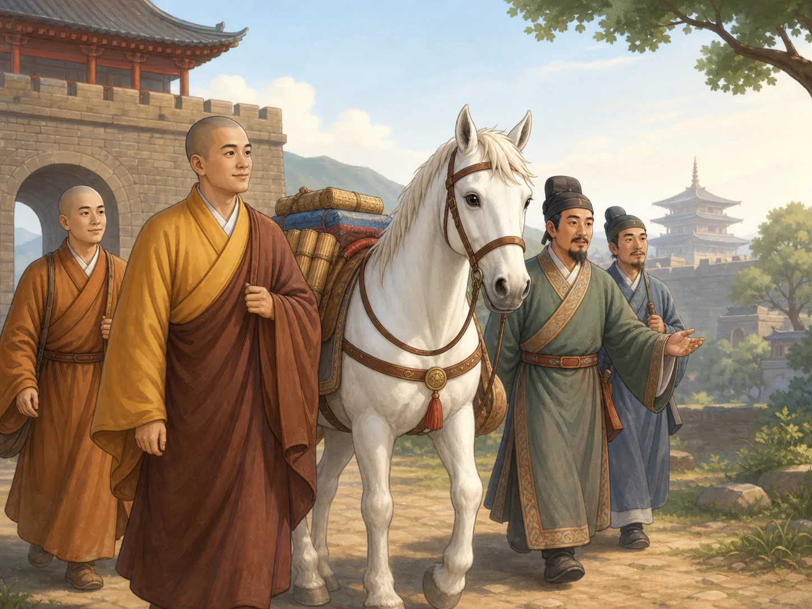
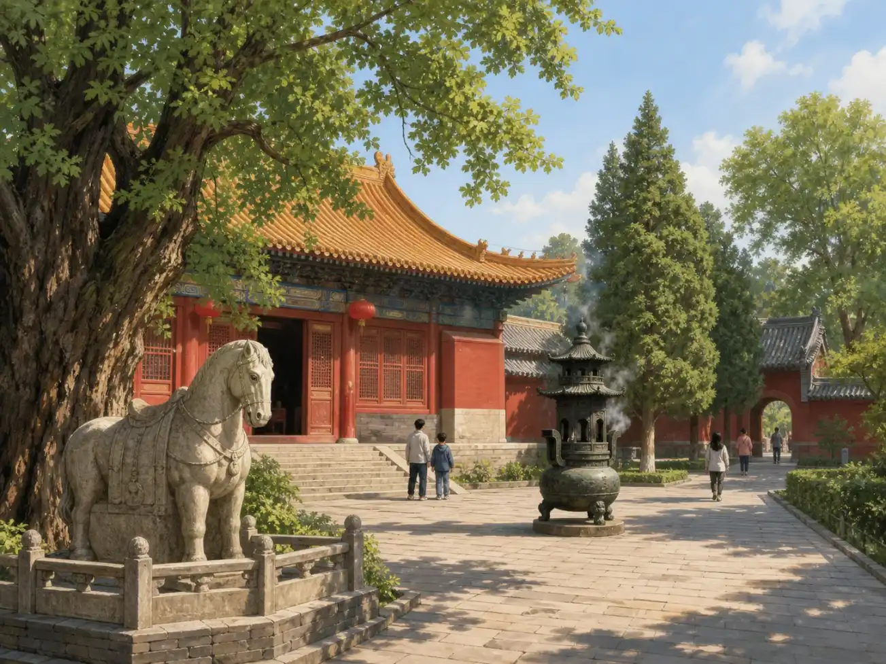

不只一匹白马：佛教怎样来到中国
More Than One White Horse: How Buddhism Reached China
阅读难度 · 困难Reading level · Hard
Page 1
一匹马能驮来一种宗教吗？
Can One Horse Carry an Entire Religion?
佛教发源于古代印度。它从佛陀的教导发展而来，讨论人为什么会受苦，以及怎样借助道德生活、禅修和智慧得到解脱。这样一整套信仰、修行和团体生活，能不能装在一匹马背上的几卷书里，一天之内“运到”中国？
中国流传最广的答案，是汉明帝梦见金人，派使者向西求法；两位僧人随后用白马驮着佛像和经卷来到都城洛阳，朝廷在公元68年建立白马寺。这个故事有梦、有远行，还有一匹很好记的马，像一个完美的开场。然而历史留下的线索告诉我们：佛教进入中国没有唯一的出发日，也不是只走了一条路。
Buddhism began in ancient India. It grew from the teachings of the Buddha and explored why people suffer and how ethical living, meditation, and wisdom might lead to freedom from suffering. Could this whole world of belief, practice, and community life be packed into a few scrolls, loaded onto one horse, and “delivered” to China in a single day?
China's best-known answer begins with Emperor Ming of the Han dreaming about a golden figure. He sends messengers west to search for the teaching. Two monks then arrive in the capital, Luoyang, with Buddhist images and scriptures carried by a white horse, and the court builds White Horse Temple in 68 CE. With a dream, a journey, and an unforgettable animal, it sounds like a perfect opening. The surviving clues, however, tell us that Buddhism had no single arrival day and traveled along more than one road.
Page 2
公元一世纪的一条可靠线索
A Strong Clue from the First Century
《后汉书》记载，公元65年，汉明帝给弟弟楚王刘英下了一道诏书。诏书说楚王诵读“黄老” - 一类把黄帝和老子联系起来的思想 - 也敬奉“浮屠”，这是当时“佛陀”的一种译名。记载还提到他身边有佛教在家信徒和出家修行者。它并没有说佛教在这一年刚刚到达，却说明公元一世纪的中国已经有人接触并实践佛教。
这条线索也提醒我们，最早的信徒未必立刻把佛教看成一套与本地传统完全分开的宗教。楚王同时亲近黄老思想和佛教仪式，人们可能借熟悉的词语理解陌生观念。新信仰不是走过城门便自动被所有人听懂；它要在人与人的交往中，一点点被解释。
《后汉书》由史学家范晔在五世纪编成，距离东汉已有几百年，但它保存了更早的材料。我们仍需谨慎，却可以把这条有年代的朝廷记录，和“世代相传的一场梦”区别开来。
The Book of the Later Han preserves an imperial order from 65 CE addressed to Liu Ying, the emperor's brother and the Prince of Chu. It says that the prince recited Huang-Lao teachings - a group of ideas linked with the Yellow Emperor and Laozi - and honored Futu, an early Chinese rendering of “Buddha.” The record also mentions Buddhist lay followers and renunciants around him. It does not say that Buddhism had just arrived that year. Instead, it shows that some people in first-century China already knew and practiced elements of the religion.
This clue also suggests that early followers did not always treat Buddhism as a system completely separate from local traditions. The prince honored both Huang-Lao ideas and Buddhist rites, and unfamiliar teachings could be understood through familiar words. A religion did not become clear to everyone simply by passing through a city gate. People had to explain it to one another, piece by piece.
The historian Fan Ye compiled the Book of the Later Han in the fifth century, hundreds of years after the Eastern Han. His book preserves older material, but it still requires careful reading. A dated court order and a story introduced as something “people say” do not carry exactly the same kind of evidence.
Page 3
梦、两位僧人和白马，是怎样连在一起的
How the Dream, Two Monks, and a White Horse Joined One Story

This modern image imagines the white-horse tradition; it is not a reconstruction of first-century Luoyang. The complete scene comes from later retellings.
《后汉书·西域传》讲汉明帝梦见头顶有光的金人时，开头用了“世传”二字，意思就是“世间相传”。这部书写成于五世纪，并不是皇帝做梦当晚的记录。它说皇帝后来派人到天竺 - 古代中国对印度的一种称呼 - 询问佛法，佛像和佛经图画于是传到中国，却没有完整写出今天最熟悉的两位僧人、白马驮经和公元68年建寺的全部情节。
这些细节在后来的佛教史传和寺院记忆中越讲越完整。摄摩腾、竺法兰、《四十二章经》与白马寺被接到同一条故事线上，不同文献的姓名、日期和路线还不完全一致。学者能确认的是，洛阳后来确有一座白马寺，三世纪末的译经题记已经提到它；但没有同时代证据可以证明寺院一定在68年为那两位僧人建立。
所以，第一幅图画的不是一场已被证实的抵达仪式。它画的是后人怎样想象一个开端：僧人、经卷、使者和白马在洛阳城门相遇。传说值得讲，因为它塑造了文化记忆；也必须标明为传说，因为故事不能代替证据。
When the “Treatise on the Western Regions” in the Book of the Later Han tells of Emperor Ming dreaming about a tall golden figure with light above his head, it begins with words meaning “tradition says.” The book was compiled in the fifth century, not on the morning after the dream. Its account says the emperor sent people toward Tianzhu, an old Chinese name for India, to ask about the Buddha's teaching, after which Buddhist images and pictures appeared in China. It does not contain every detail of today's familiar story about two named monks, scriptures on a white horse, and a temple founded in exactly 68 CE.
Later Buddhist biographies and temple traditions joined those pieces into a fuller scene. The names She Moteng and Zhu Falan, the Sutra in Forty-Two Sections, and White Horse Temple became parts of one origin story, although sources do not agree on every name, date, or route. Scholars can confirm that a White Horse Temple later existed in Luoyang; a translation colophon from the late third century already names it. They cannot confirm from contemporary evidence that it was founded in 68 specifically for those two monks.
The first illustration is therefore not a reconstruction of a proven arrival ceremony. It shows how later people pictured a beginning: monks, scrolls, messengers, and a white horse meeting at Luoyang's gate. A tradition matters because it shapes cultural memory. It also needs a clear label, because memory cannot replace evidence.
Page 4
真正让佛教留下来的，是翻译室里的合作
The Work That Helped Buddhism Stay Happened in Translation Rooms
到了公元二世纪，线索变得清楚许多。大约148年，来自安息地区（大致以今天伊朗一带为中心）的安世高在洛阳从事翻译，介绍禅修等教导。稍后，来自中亚月氏文化圈的支娄迦谶翻译了讨论菩萨修行道路的早期大乘佛教经典。许多参与者来自今天所说的中亚，并不只是从印度直接走到中国的“两位僧人”。
早期译经常是一群人的合作：有人用外来语言背诵或解释，有人转述意思，有人把它整理成读者能懂的汉文。连“佛”“菩萨”这样的词，也要在声音、意义和旧有汉语之间反复选择。翻译不是给原文换一件中国衣服，而是在尽量理解陌生思想时创造一座语言桥梁。
人也沿着许多相连的道路移动。商人、使者、僧人和在家信徒经过中亚绿洲，再穿过连接中原与西域的狭长通道河西走廊，来到汉帝国的城市；南方港口与海上交通后来也连接起更广阔的佛教世界。“丝绸之路”本来就是一张陆路和海路交织的网络，不是一条从印度直通洛阳的笔直大道。
By the second century, the trail becomes clearer. Around 148 CE, An Shigao, a translator from the Parthian world centered roughly in present-day Iran, worked in Luoyang and introduced texts about meditation and other teachings. A little later, Lokakshema, who came from a Yuezhi cultural background in Central Asia, translated early Mahayana scriptures about the bodhisattva path. Many important travelers came through lands we now call Central Asia. The story was much larger than two monks walking directly from India to China.
Early translation was often teamwork. One person might recite or explain a text in a foreign language, another relay its meaning, and a Chinese scribe shape it into readable writing. Even words such as “Buddha” and “bodhisattva” required choices between sound, meaning, and familiar Chinese vocabulary. Translation was not simply dressing a foreign book in Chinese clothes. It built a language bridge while people worked to understand ideas that were genuinely new to them.
People also moved through connected networks rather than one straight road. Merchants, envoys, monks, and lay believers passed through Central Asian oasis towns and the Hexi Corridor, a narrow route linking the Chinese heartland with regions to the west, before reaching cities of the Han empire. Southern ports and sea travel later connected China to a wider Buddhist world as well. What we call the Silk Roads was a web of changing land and sea routes, not one highway running directly from India to Luoyang.
Page 5
留下来，也继续与外界往来
Putting Down Roots While Connections Continued
佛教在中国的发展，也不是“外国佛教来到后，慢慢变成纯粹的中国样子”。中国僧人后来向西和向南求经，新的僧人、文本、仪式和艺术又不断进入，各地信徒也作出不同选择。交流不是只发生一次，而是持续了许多世纪。
观音就是一个好例子。这位代表慈悲的菩萨在印度和早期中国艺术中常呈男性或性别不明确的形象，后来在中国也越来越常以女性形象出现；但男性、女性和多种变化身并没有按同一天整齐换班。敦煌的洞窟艺术同样包含来自印度、中亚、伊朗地区和中国不同朝代的影响。它不是把“外国画法”逐幅擦掉，而是把许多人、许多语言和赞助者留下的选择保存在同一处。
Buddhism's history in China is not a story in which a “foreign Buddhism” arrived and slowly changed into one purely “Chinese shape.” Chinese monks later traveled west and south in search of texts, while new monks, books, rituals, and artistic ideas continued to enter. Communities in different places made different choices. The exchange did not happen once; it continued for centuries.
Guanyin offers one example. This bodhisattva of compassion often appeared as male or without a fixed gender in Indian and early Chinese art. Female forms became increasingly common in China over time, but male, female, and many transforming forms did not neatly replace one another on a single date. The cave art of Dunhuang likewise preserves influences from India, Central Asia, Iranian regions, and many periods of Chinese history. Its artists did not simply erase a “foreign style.” They recorded choices made by many peoples, languages, artists, and patrons in one remarkable place.
Page 6
今天的白马寺，保存的是哪一种历史？
What Kind of History Does White Horse Temple Preserve Today?

This is a modern concept image, not a documentary photograph of today's temple, and it cannot identify any structure as Eastern Han.
今天，洛阳仍有白马寺，人们也继续把它称为佛教传入中国的重要象征。寺院在漫长历史中多次修建和改变，因此眼前的殿宇、石马和院落不能直接带我们回到东汉。第二幅图还是现代绘制的概念场景，并非寺院现状的照片。
不过，一座寺院不必保留公元一世纪的原砖原瓦，才具有历史意义。白马寺保存了另一种真实：后世怎样讲述佛教的开端，怎样纪念翻译者与远行者，又怎样把一匹白马变成跨文化交流的象征。它让我们同时看见“发生过什么”和“人们选择怎样记住”这两个问题。
White Horse Temple still stands in Luoyang, and people continue to treat it as an important symbol of Buddhism's arrival in China. The complex was rebuilt and changed across a long history, so its halls, stone horses, and courtyards cannot carry us straight back to the Eastern Han. The second illustration is also a modern concept scene, not a photograph of the temple today.
A temple does not need to preserve its first-century bricks to hold historical meaning. White Horse Temple preserves another kind of truth: how later generations told Buddhism's beginning, honored translators and travelers, and turned a white horse into a symbol of cultural exchange. It lets us ask both “What happened?” and “How did people choose to remember it?”
小结：从一幅画，走向许多脚印
In Summary: From One Picture to Many Footprints
如果只记住汉明帝的梦，我们得到的是一个清楚而动人的传统故事；如果继续追查公元65年的诏书、二世纪的翻译者和跨越中亚的交流网络，我们才看见更完整的历史。佛教不是被一匹白马一次送达的包裹，而是在许多旅行、翻译、争论、修行和支持中逐渐扎根。
下次看见白马驮经的图，可以多问两句：这幅图来自哪一种文献？它是在记录当时，还是在表达后人的记忆？知道答案，不会让故事失去趣味，反而会让那匹白马身后的道路变得更宽、更真实。
If we remember only Emperor Ming's dream, we have a vivid traditional story. If we also follow the order from 65 CE, the translators of the second century, and the networks stretching through Central Asia, we see a fuller history. Buddhism was not a package delivered once by a white horse. It took root through many journeys, translations, debates, religious practices, and communities of support.
The next time you see a picture of the horse carrying scriptures, ask two more questions: What kind of source tells this scene? Is it recording the time itself, or expressing how later people remembered it? Those questions do not make the story less interesting. They make the roads behind the horse wider and more real.